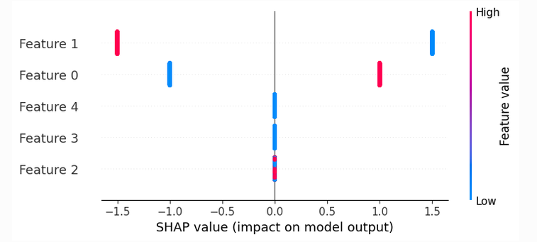
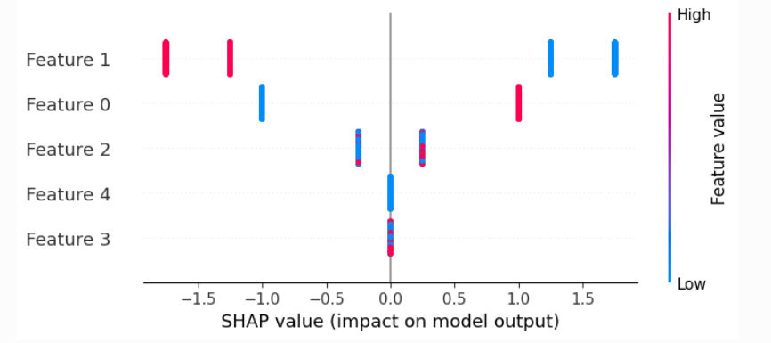
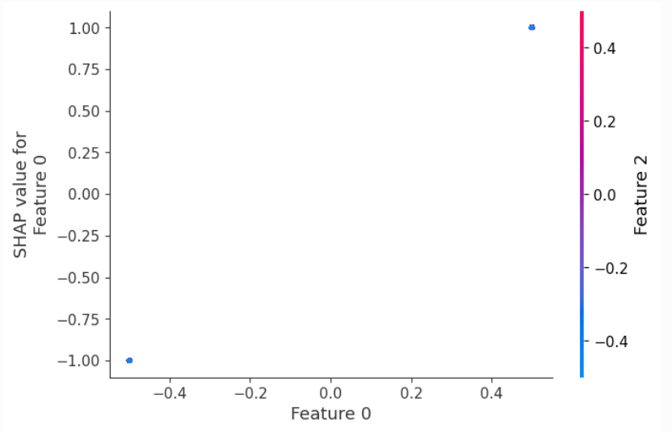
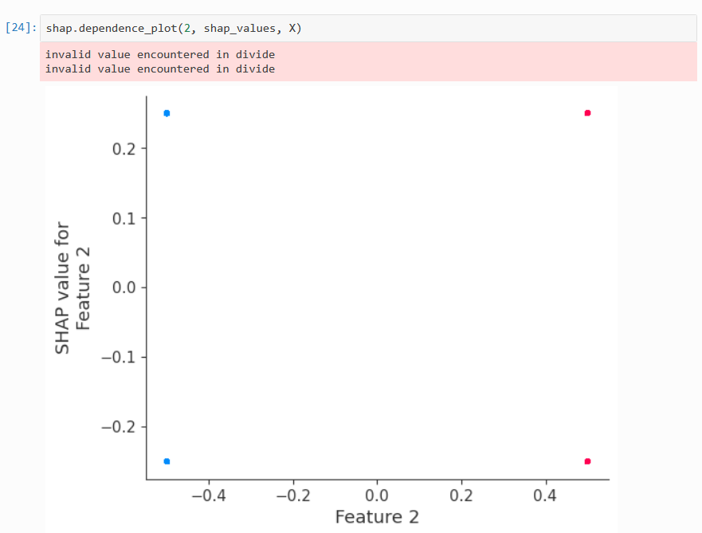

<!DOCTYPE html>


<html lang="zh-CN">


<head>
  <meta name="baidu-site-verification" content="codeva-NSg7ynviLa" />
  <meta charset="utf-8" />
    
  <meta name="viewport" content="width=device-width, initial-scale=1, maximum-scale=1" />
  <title>
    shap计算交互效应 |  
  </title>
  <meta name="generator" content="hexo-theme-ayer">
  
  <link rel="shortcut icon" href="/images/mojie.jpg" />
  
  
<link rel="stylesheet" href="/dist/main.css">

  <link rel="stylesheet" href="https://cdn.jsdelivr.net/gh/Shen-Yu/cdn/css/remixicon.min.css">
  
<link rel="stylesheet" href="/css/custom.css">

  
  <script src="https://cdn.jsdelivr.net/npm/pace-js@1.0.2/pace.min.js"></script>
  
  

  

<link rel="alternate" href="/atom.xml" title="null" type="application/atom+xml">
</head>

</html>

<body>
  <div id="app">
    
      
    <main class="content on">
      <section class="outer">
  <article
  id="post-shap计算交互效应"
  class="article article-type-post"
  itemscope
  itemprop="blogPost"
  data-scroll-reveal
>
  <div class="article-inner">
    
    <header class="article-header">
       
<h1 class="article-title sea-center" style="border-left:0" itemprop="name">
  shap计算交互效应
</h1>
 

    </header>
     
    <div class="article-meta">
      <a href="/posts/a2b39352/" class="article-date">
  <time datetime="2026-11-10T07:14:57.000Z" itemprop="datePublished">2026-11-10</time>
</a>   
<div class="word_count">
    <span class="post-time">
        <span class="post-meta-item-icon">
            <i class="ri-quill-pen-line"></i>
            <span class="post-meta-item-text"> 字数统计:</span>
            <span class="post-count">2.4k</span>
        </span>
    </span>

    <span class="post-time">
        &nbsp; | &nbsp;
        <span class="post-meta-item-icon">
            <i class="ri-book-open-line"></i>
            <span class="post-meta-item-text"> 阅读时长≈</span>
            <span class="post-count">10 分钟</span>
        </span>
    </span>
</div>
 
    </div>
      
    <div class="tocbot"></div>


  
    <div class="article-entry" itemprop="articleBody">
       
  <p>本笔记展示了如何计算一个非常简单函数的SHAP交互值。我们从一个简单的线性函数开始，然后添加一个交互项，观察它如何改变SHAP值和SHAP交互值。</p>
<span id="more"></span>
<p>首先导入需要用到的包</p>
<figure class="highlight python"><table><tr><td class="gutter"><pre><span class="line">1</span><br><span class="line">2</span><br><span class="line">3</span><br><span class="line">4</span><br><span class="line">5</span><br></pre></td><td class="code"><pre><span class="line"><span class="keyword">import</span> numpy <span class="keyword">as</span> np</span><br><span class="line"><span class="keyword">import</span> xgboost</span><br><span class="line"><span class="keyword">from</span> sklearn.linear_model <span class="keyword">import</span> LinearRegression</span><br><span class="line"></span><br><span class="line"><span class="keyword">import</span> shap</span><br></pre></td></tr></table></figure>
<h1 id="没有互作的例子">没有互作的例子</h1>
<p>模拟一些二元数据和一个包含交互项的线性结果。</p>
<p>请注意，我们使 X 中的各个特征完全独立，以便轻松求解精确的 SHAP 值。</p>
<p>这里 X 和 y 分别是输入和输出数据，无互作效应</p>
<figure class="highlight python"><table><tr><td class="gutter"><pre><span class="line">1</span><br><span class="line">2</span><br><span class="line">3</span><br><span class="line">4</span><br><span class="line">5</span><br><span class="line">6</span><br><span class="line">7</span><br><span class="line">8</span><br><span class="line">9</span><br><span class="line">10</span><br><span class="line">11</span><br><span class="line">12</span><br><span class="line">13</span><br><span class="line">14</span><br><span class="line">15</span><br><span class="line">16</span><br><span class="line">17</span><br></pre></td><td class="code"><pre><span class="line">N = <span class="number">2_000</span></span><br><span class="line">X = np.zeros((N, <span class="number">5</span>))</span><br><span class="line"></span><br><span class="line">X[:<span class="number">1_000</span>, <span class="number">0</span>] = <span class="number">1</span></span><br><span class="line"></span><br><span class="line">X[:<span class="number">500</span>, <span class="number">1</span>] = <span class="number">1</span></span><br><span class="line">X[<span class="number">1_000</span>:<span class="number">1_500</span>, <span class="number">1</span>] = <span class="number">1</span></span><br><span class="line"></span><br><span class="line">X[:<span class="number">250</span>, <span class="number">2</span>] = <span class="number">1</span></span><br><span class="line">X[<span class="number">500</span>:<span class="number">750</span>, <span class="number">2</span>] = <span class="number">1</span></span><br><span class="line">X[<span class="number">1_000</span>:<span class="number">1_250</span>, <span class="number">2</span>] = <span class="number">1</span></span><br><span class="line">X[<span class="number">1_500</span>:<span class="number">1_750</span>, <span class="number">2</span>] = <span class="number">1</span></span><br><span class="line"></span><br><span class="line"><span class="comment"># mean-center the data</span></span><br><span class="line">X[:, <span class="number">0</span>:<span class="number">3</span>] -= <span class="number">0.5</span></span><br><span class="line"></span><br><span class="line">y = <span class="number">2</span> * X[:, <span class="number">0</span>] - <span class="number">3</span> * X[:, <span class="number">1</span>]</span><br></pre></td></tr></table></figure>
<p>我们看到这些变量确实是独立的</p>
<figure class="highlight python"><table><tr><td class="gutter"><pre><span class="line">1</span><br><span class="line">2</span><br><span class="line">3</span><br><span class="line">4</span><br><span class="line">5</span><br><span class="line">6</span><br><span class="line">7</span><br><span class="line">8</span><br></pre></td><td class="code"><pre><span class="line">In [<span class="number">3</span>]: np.cov(X.T)</span><br><span class="line">Out[<span class="number">3</span>]:</span><br><span class="line">array([[<span class="number">0.25012506</span>, <span class="number">0.</span>        , <span class="number">0.</span>        , <span class="number">0.</span>        , <span class="number">0.</span>        ],</span><br><span class="line">       [<span class="number">0.</span>        , <span class="number">0.25012506</span>, <span class="number">0.</span>        , <span class="number">0.</span>        , <span class="number">0.</span>        ],</span><br><span class="line">       [<span class="number">0.</span>        , <span class="number">0.</span>        , <span class="number">0.25012506</span>, <span class="number">0.</span>        , <span class="number">0.</span>        ],</span><br><span class="line">       [<span class="number">0.</span>        , <span class="number">0.</span>        , <span class="number">0.</span>        , <span class="number">0.</span>        , <span class="number">0.</span>        ],</span><br><span class="line">       [<span class="number">0.</span>        , <span class="number">0.</span>        , <span class="number">0.</span>        , <span class="number">0.</span>        , <span class="number">0.</span>        ]])</span><br><span class="line"></span><br></pre></td></tr></table></figure>
<p>并且每列均值均为0</p>
<figure class="highlight python"><table><tr><td class="gutter"><pre><span class="line">1</span><br><span class="line">2</span><br></pre></td><td class="code"><pre><span class="line">In [<span class="number">4</span>]: X.mean(axis=<span class="number">0</span>)</span><br><span class="line">Out[<span class="number">4</span>]: array([<span class="number">0.</span>, <span class="number">0.</span>, <span class="number">0.</span>, <span class="number">0.</span>, <span class="number">0.</span>])</span><br></pre></td></tr></table></figure>
<p>构建一个简单的 xgboost 模型</p>
<figure class="highlight python"><table><tr><td class="gutter"><pre><span class="line">1</span><br><span class="line">2</span><br><span class="line">3</span><br><span class="line">4</span><br><span class="line">5</span><br><span class="line">6</span><br></pre></td><td class="code"><pre><span class="line"><span class="comment"># train a model with single tree</span></span><br><span class="line">Xd = xgboost.DMatrix(X, label=y)</span><br><span class="line">model = xgboost.train(&#123;<span class="string">&quot;eta&quot;</span>: <span class="number">1</span>, <span class="string">&quot;max_depth&quot;</span>: <span class="number">3</span>, <span class="string">&quot;base_score&quot;</span>: <span class="number">0</span>, <span class="string">&quot;lambda&quot;</span>: <span class="number">0</span>&#125;, Xd, <span class="number">1</span>)</span><br><span class="line"></span><br><span class="line"><span class="built_in">print</span>(<span class="string">&quot;Model error =&quot;</span>, np.linalg.norm(y - model.predict(Xd)))</span><br><span class="line"><span class="built_in">print</span>(model.get_dump(with_stats=<span class="literal">True</span>)[<span class="number">0</span>])</span><br></pre></td></tr></table></figure>
<p>计算 shap 值</p>
<figure class="highlight python"><table><tr><td class="gutter"><pre><span class="line">1</span><br><span class="line">2</span><br><span class="line">3</span><br><span class="line">4</span><br><span class="line">5</span><br><span class="line">6</span><br><span class="line">7</span><br><span class="line">8</span><br></pre></td><td class="code"><pre><span class="line">pred = model.predict(Xd, output_margin=<span class="literal">True</span>)</span><br><span class="line"></span><br><span class="line">explainer = shap.TreeExplainer(model)</span><br><span class="line">explanation = explainer(Xd)</span><br><span class="line"></span><br><span class="line">shap_values = explanation.values</span><br><span class="line"><span class="comment"># make sure the SHAP values add up to marginal predictions</span></span><br><span class="line">np.<span class="built_in">abs</span>(shap_values.<span class="built_in">sum</span>(axis=<span class="number">1</span>) + explanation.base_values - pred).<span class="built_in">max</span>()</span><br></pre></td></tr></table></figure>
<p>如果我们绘制蜂群图，就会发现只有特征0和1对输出有影响，且它们的影响仅有两种可能的幅度（分别为1/-1和1.5/-1.5）。</p>
<p></p>
<p>训练一个线性模型</p>
<figure class="highlight python"><table><tr><td class="gutter"><pre><span class="line">1</span><br><span class="line">2</span><br><span class="line">3</span><br><span class="line">4</span><br><span class="line">5</span><br></pre></td><td class="code"><pre><span class="line">In [<span class="number">10</span>]: lr = LinearRegression()</span><br><span class="line">    ...: lr.fit(X, y)</span><br><span class="line">    ...: lr_pred = lr.predict(X)</span><br><span class="line">    ...: lr.coef_.<span class="built_in">round</span>(<span class="number">2</span>)</span><br><span class="line">Out[<span class="number">10</span>]: array([ <span class="number">2.</span>, -<span class="number">3.</span>, -<span class="number">0.</span>,  <span class="number">0.</span>,  <span class="number">0.</span>])</span><br></pre></td></tr></table></figure>
<p>确保计算出的SHAP值与真实的SHAP值一致（对于任何线性回归，我们都可以直接计算真实的SHAP值）</p>
<figure class="highlight python"><table><tr><td class="gutter"><pre><span class="line">1</span><br><span class="line">2</span><br><span class="line">3</span><br></pre></td><td class="code"><pre><span class="line">In [<span class="number">11</span>]: main_effect_shap_values = lr.coef_ * (X - X.mean(<span class="number">0</span>))</span><br><span class="line">    ...: np.linalg.norm(shap_values - main_effect_shap_values)</span><br><span class="line">Out[<span class="number">11</span>]: np.float64(<span class="number">1.6542433490447965e-13</span>)</span><br></pre></td></tr></table></figure>
<p>这个极小的数值证明了：<strong>在没有特征交互的情况下，树模型的 SHAP 值精确退化为线性模型的主效应，SHAP 方法具有一致性。</strong></p>
<h2 id="计算shap互作效应">计算shap互作效应</h2>
<p>请注意，当不存在交互作用时，SHAP交互值仅为对角矩阵，其对角线上的元素为SHAP值。</p>
<figure class="highlight python"><table><tr><td class="gutter"><pre><span class="line">1</span><br><span class="line">2</span><br></pre></td><td class="code"><pre><span class="line">shap_interaction_values = explainer.shap_interaction_values(Xd)</span><br><span class="line">shap_interaction_values[<span class="number">0</span>]</span><br></pre></td></tr></table></figure>
<p>第一行是计算交互效应</p>
<ul>
<li><code>explainer</code> 是之前创建的 <code>shap.TreeExplainer(model)</code>。</li>
<li><code>shap_interaction_values(Xd)</code> 是 <code>TreeExplainer</code> 的一个方法，专门用于计算 <strong>SHAP 交互值矩阵</strong>。</li>
<li>返回值的形状是 <code>(n_samples, n_features, n_features)</code>：
<ul>
<li>第一个维度：样本数。</li>
<li>第二、三个维度：特征 × 特征的方阵，每个样本一个矩阵。</li>
</ul></li>
<li>计算复杂度比普通 SHAP 值高，因为要枚举所有特征对，但 <code>TreeExplainer</code> 对树模型有精确的多项式时间算法。</li>
</ul>
<p>第二行输出第一个样本的结果</p>
<figure class="highlight python"><table><tr><td class="gutter"><pre><span class="line">1</span><br><span class="line">2</span><br><span class="line">3</span><br><span class="line">4</span><br><span class="line">5</span><br><span class="line">6</span><br></pre></td><td class="code"><pre><span class="line">Out[<span class="number">14</span>]:</span><br><span class="line">array([[ <span class="number">1.</span> ,  <span class="number">0.</span> ,  <span class="number">0.</span> ,  <span class="number">0.</span> ,  <span class="number">0.</span> ],</span><br><span class="line">       [ <span class="number">0.</span> , -<span class="number">1.5</span>,  <span class="number">0.</span> ,  <span class="number">0.</span> ,  <span class="number">0.</span> ],</span><br><span class="line">       [ <span class="number">0.</span> ,  <span class="number">0.</span> ,  <span class="number">0.</span> ,  <span class="number">0.</span> ,  <span class="number">0.</span> ],</span><br><span class="line">       [ <span class="number">0.</span> ,  <span class="number">0.</span> ,  <span class="number">0.</span> ,  <span class="number">0.</span> ,  <span class="number">0.</span> ],</span><br><span class="line">       [ <span class="number">0.</span> ,  <span class="number">0.</span> ,  <span class="number">0.</span> ,  <span class="number">0.</span> ,  <span class="number">0.</span> ]], dtype=float32)</span><br></pre></td></tr></table></figure>
<ul>
<li>取出第一个样本的交互值矩阵，形状为 <code>(n_features, n_features)</code>。</li>
<li>这个矩阵的结构：
<ul>
<li><strong>对角线元素</strong> <code>[i, i]</code>：特征 <code>i</code> 的<strong>主效应</strong>（main effect）。</li>
<li><strong>非对角线元素</strong> <code>[i, j]</code>（i≠j）：特征 <code>i</code> 和特征 <code>j</code> 之间的<strong>交互效应</strong>（）。</li>
</ul></li>
<li>矩阵是<strong>对称的</strong>，即 <code>[i, j] = [j, i]</code>，因为交互是双向的。</li>
</ul>
<p>让我们确保SHAP交互值的总和等于边际预测：这里就是检验每个样本的交互值矩阵中<strong>所有元素加在一起</strong> + <strong>基准值</strong> ，<strong>是否精确等于模型的原始预测值</strong>。</p>
<figure class="highlight python"><table><tr><td class="gutter"><pre><span class="line">1</span><br></pre></td><td class="code"><pre><span class="line">np.<span class="built_in">abs</span>(shap_interaction_values.<span class="built_in">sum</span>((<span class="number">1</span>, <span class="number">2</span>)) + explainer.expected_value - pred).<span class="built_in">max</span>()</span><br></pre></td></tr></table></figure>
<p>并确保SHAP交互作用值的主要效应与线性模型中的效应相匹配：</p>
<figure class="highlight python"><table><tr><td class="gutter"><pre><span class="line">1</span><br><span class="line">2</span><br><span class="line">3</span><br><span class="line">4</span><br><span class="line">5</span><br></pre></td><td class="code"><pre><span class="line">total = <span class="number">0</span></span><br><span class="line"><span class="keyword">for</span> i <span class="keyword">in</span> <span class="built_in">range</span>(N):</span><br><span class="line">    <span class="keyword">for</span> j <span class="keyword">in</span> <span class="built_in">range</span>(<span class="number">5</span>):</span><br><span class="line">        total += np.<span class="built_in">abs</span>(shap_interaction_values[i, j, j] - main_effect_shap_values[i, j])</span><br><span class="line">total</span><br></pre></td></tr></table></figure>
<figure class="highlight python"><table><tr><td class="gutter"><pre><span class="line">1</span><br></pre></td><td class="code"><pre><span class="line">Out[<span class="number">17</span>]: np.float64(<span class="number">1.0533118387982904e-11</span>)</span><br></pre></td></tr></table></figure>
<h3 id="额外详细解释交互效应">额外：详细解释交互效应</h3>
<p>假设特征 1 和特征 2 之间存在交互。在 <code>shap_interaction_values</code> 矩阵中：</p>
<figure class="highlight plaintext"><table><tr><td class="gutter"><pre><span class="line">1</span><br><span class="line">2</span><br><span class="line">3</span><br></pre></td><td class="code"><pre><span class="line">       特征1   特征2</span><br><span class="line">特征1 [ Φ[1,1]  Φ[1,2] ]</span><br><span class="line">特征2 [ Φ[2,1]  Φ[2,2] ]</span><br></pre></td></tr></table></figure>
<p>由于矩阵对称，<code>Φ[1,2] = Φ[2,1]</code>。</p>
<p>这里有两个概念：</p>
<table>
<colgroup>
<col style="width: 26%" />
<col style="width: 28%" />
<col style="width: 45%" />
</colgroup>
<thead>
<tr>
<th>名称</th>
<th>表达式</th>
<th>含义</th>
</tr>
</thead>
<tbody>
<tr>
<td><strong>单个特征分到的交互贡献</strong></td>
<td><code>Φ[1,2]</code>（或 <code>Φ[2,1]</code>）</td>
<td>特征 1 从交互中分到的部分，也是特征 2 分到的部分</td>
</tr>
<tr>
<td><strong>两个特征之间的总交互效应</strong></td>
<td><code>Φ[1,2] + Φ[2,1] = 2 * Φ[1,2]</code></td>
<td>交互整体对预测值的额外贡献</td>
</tr>
</tbody>
</table>
<p>所以：</p>
<blockquote>
<p><strong>非对角线元素 <code>Φ[1,2]</code> 是“总交互效应”的一半，但它是“特征 1 分到的交互贡献”的全部。</strong></p>
</blockquote>
<p>不矛盾，只是参照物不同。</p>
<h3 id="额外-shap_values-和-shap_interaction_values-矩阵的关系">额外： <code>shap_values</code> 和 <code>shap_interaction_values</code> 矩阵的关系</h3>
<p>每个特征的 <code>shap_values</code> 和 <code>shap_interaction_values</code> 的关系如下</p>
<p>对于每个样本、每个特征 <code>i</code>：
<span class="math display">\[
\boxed{\text{shap_values}[i] = \text{shap_interaction_values}[i,i] + \sum_{j \neq i} \text{shap_interaction_values}[i,j]}
\]</span>
用文字说就是：</p>
<blockquote>
<p><strong>普通 SHAP 值 = 主效应（对角线） + 该特征与其他所有特征的交互贡献之和</strong></p>
</blockquote>
<p>所以 <code>shap_values</code> 就是 <code>shap_interaction_values</code> 矩阵<strong>第 i 行的行和</strong>（也是第 i 列的列和，因为矩阵对称）。</p>
<h1 id="有互作的例子">有互作的例子</h1>
<p>创建数据如下</p>
<figure class="highlight python"><table><tr><td class="gutter"><pre><span class="line">1</span><br><span class="line">2</span><br><span class="line">3</span><br><span class="line">4</span><br><span class="line">5</span><br><span class="line">6</span><br><span class="line">7</span><br><span class="line">8</span><br><span class="line">9</span><br><span class="line">10</span><br><span class="line">11</span><br><span class="line">12</span><br><span class="line">13</span><br><span class="line">14</span><br><span class="line">15</span><br><span class="line">16</span><br><span class="line">17</span><br><span class="line">18</span><br><span class="line">19</span><br><span class="line">20</span><br><span class="line">21</span><br><span class="line">22</span><br><span class="line">23</span><br><span class="line">24</span><br><span class="line">25</span><br><span class="line">26</span><br><span class="line">27</span><br></pre></td><td class="code"><pre><span class="line">N = <span class="number">2_000</span></span><br><span class="line">X = np.zeros((N, <span class="number">5</span>))</span><br><span class="line">X[:<span class="number">1_000</span>, <span class="number">0</span>] = <span class="number">1</span></span><br><span class="line"></span><br><span class="line">X[:<span class="number">500</span>, <span class="number">1</span>] = <span class="number">1</span></span><br><span class="line">X[<span class="number">1_000</span>:<span class="number">1_500</span>, <span class="number">1</span>] = <span class="number">1</span></span><br><span class="line"></span><br><span class="line">X[:<span class="number">250</span>, <span class="number">2</span>] = <span class="number">1</span></span><br><span class="line">X[<span class="number">500</span>:<span class="number">750</span>, <span class="number">2</span>] = <span class="number">1</span></span><br><span class="line">X[<span class="number">1_000</span>:<span class="number">1_250</span>, <span class="number">2</span>] = <span class="number">1</span></span><br><span class="line">X[<span class="number">1_500</span>:<span class="number">1_750</span>, <span class="number">2</span>] = <span class="number">1</span></span><br><span class="line"></span><br><span class="line">X[:<span class="number">125</span>, <span class="number">3</span>] = <span class="number">1</span></span><br><span class="line">X[<span class="number">250</span>:<span class="number">375</span>, <span class="number">3</span>] = <span class="number">1</span></span><br><span class="line">X[<span class="number">500</span>:<span class="number">625</span>, <span class="number">3</span>] = <span class="number">1</span></span><br><span class="line">X[<span class="number">750</span>:<span class="number">875</span>, <span class="number">3</span>] = <span class="number">1</span></span><br><span class="line">X[<span class="number">1_000</span>:<span class="number">1_125</span>, <span class="number">3</span>] = <span class="number">1</span></span><br><span class="line">X[<span class="number">1_250</span>:<span class="number">1_375</span>, <span class="number">3</span>] = <span class="number">1</span></span><br><span class="line">X[<span class="number">1_500</span>:<span class="number">1_625</span>, <span class="number">3</span>] = <span class="number">1</span></span><br><span class="line">X[<span class="number">1_750</span>:<span class="number">1_875</span>, <span class="number">3</span>] = <span class="number">1</span></span><br><span class="line"></span><br><span class="line"><span class="comment"># we can&#x27;t exactly mean center the data or XGBoost has trouble finding the splits</span></span><br><span class="line">X[:, :<span class="number">4</span>] -= <span class="number">0.4999</span></span><br><span class="line"></span><br><span class="line"><span class="comment"># interaction of features is implemented as the multiplication of the features. Note that any other function of the</span></span><br><span class="line"><span class="comment">#  features would also work, but is harder to interpret (e.g. sin(x1*x2)).</span></span><br><span class="line">y = <span class="number">2</span> * X[:, <span class="number">0</span>] - <span class="number">3</span> * X[:, <span class="number">1</span>] + <span class="number">2</span> * X[:, <span class="number">1</span>] * X[:, <span class="number">2</span>]</span><br></pre></td></tr></table></figure>
<p>查看每列均值是否为0</p>
<figure class="highlight python"><table><tr><td class="gutter"><pre><span class="line">1</span><br><span class="line">2</span><br></pre></td><td class="code"><pre><span class="line">In [<span class="number">19</span>]: X.mean(axis=<span class="number">0</span>)</span><br><span class="line">Out[<span class="number">19</span>]: array([<span class="number">1.e-04</span>, <span class="number">1.e-04</span>, <span class="number">1.e-04</span>, <span class="number">1.e-04</span>, <span class="number">0.e+00</span>])</span><br></pre></td></tr></table></figure>
<p>训练一个简单的 xgboost 模型</p>
<figure class="highlight python"><table><tr><td class="gutter"><pre><span class="line">1</span><br><span class="line">2</span><br><span class="line">3</span><br><span class="line">4</span><br><span class="line">5</span><br></pre></td><td class="code"><pre><span class="line"><span class="comment"># train a model with single tree</span></span><br><span class="line">Xd = xgboost.DMatrix(X, label=y)</span><br><span class="line">model = xgboost.train(&#123;<span class="string">&quot;eta&quot;</span>: <span class="number">1</span>, <span class="string">&quot;max_depth&quot;</span>: <span class="number">4</span>, <span class="string">&quot;base_score&quot;</span>: <span class="number">0</span>, <span class="string">&quot;lambda&quot;</span>: <span class="number">0</span>&#125;, Xd, <span class="number">1</span>)</span><br><span class="line"><span class="built_in">print</span>(<span class="string">&quot;Model error =&quot;</span>, np.linalg.norm(y - model.predict(Xd)))</span><br><span class="line"><span class="built_in">print</span>(model.get_dump(with_stats=<span class="literal">True</span>)[<span class="number">0</span>])</span><br></pre></td></tr></table></figure>
<p>计算 shap 值</p>
<figure class="highlight python"><table><tr><td class="gutter"><pre><span class="line">1</span><br><span class="line">2</span><br><span class="line">3</span><br><span class="line">4</span><br><span class="line">5</span><br><span class="line">6</span><br><span class="line">7</span><br><span class="line">8</span><br></pre></td><td class="code"><pre><span class="line">pred = model.predict(Xd, output_margin=<span class="literal">True</span>)</span><br><span class="line"></span><br><span class="line">explainer = shap.TreeExplainer(model)</span><br><span class="line">explanation = explainer(Xd)</span><br><span class="line"></span><br><span class="line">shap_values = explanation.values</span><br><span class="line"><span class="comment"># make sure the SHAP values add up to marginal predictions</span></span><br><span class="line">np.<span class="built_in">abs</span>(shap_values.<span class="built_in">sum</span>(axis=<span class="number">1</span>) + explanation.base_values - pred).<span class="built_in">max</span>()</span><br></pre></td></tr></table></figure>
<figure class="highlight python"><table><tr><td class="gutter"><pre><span class="line">1</span><br></pre></td><td class="code"><pre><span class="line">Out[<span class="number">21</span>]: np.float32(<span class="number">4.7683716e-07</span>)</span><br></pre></td></tr></table></figure>
<p>如果我们构建一个蜂群图，就会发现现在只有特征3和4无关紧要，而特征1由于交互作用，可能有四种不同的效应大小。</p>
<figure class="highlight python"><table><tr><td class="gutter"><pre><span class="line">1</span><br></pre></td><td class="code"><pre><span class="line">shap.plots.beeswarm(explanation)</span><br></pre></td></tr></table></figure>
<p></p>
<p>训练一个线性模型</p>
<figure class="highlight python"><table><tr><td class="gutter"><pre><span class="line">1</span><br><span class="line">2</span><br><span class="line">3</span><br><span class="line">4</span><br></pre></td><td class="code"><pre><span class="line">lr = LinearRegression()</span><br><span class="line">lr.fit(X, y)</span><br><span class="line">lr_pred = lr.predict(X)</span><br><span class="line">lr.coef_.<span class="built_in">round</span>(<span class="number">2</span>)</span><br></pre></td></tr></table></figure>
<figure class="highlight python"><table><tr><td class="gutter"><pre><span class="line">1</span><br></pre></td><td class="code"><pre><span class="line">Out[<span class="number">23</span>]: array([ <span class="number">2.</span>, -<span class="number">3.</span>,  <span class="number">0.</span>, -<span class="number">0.</span>,  <span class="number">0.</span>])</span><br></pre></td></tr></table></figure>
<p>请注意，SHAP 值不再与主效应一致，因为它们现在包含了交互效应。</p>
<figure class="highlight python"><table><tr><td class="gutter"><pre><span class="line">1</span><br><span class="line">2</span><br></pre></td><td class="code"><pre><span class="line">main_effect_shap_values = lr.coef_ * (X - X.mean(<span class="number">0</span>))</span><br><span class="line">np.linalg.norm(shap_values - main_effect_shap_values)</span><br></pre></td></tr></table></figure>
<figure class="highlight python"><table><tr><td class="gutter"><pre><span class="line">1</span><br></pre></td><td class="code"><pre><span class="line">Out[<span class="number">24</span>]: np.float64(<span class="number">15.811387829626835</span>)</span><br></pre></td></tr></table></figure>
<h2 id="计算shap互作效应-1">计算shap互作效应</h2>
<p>同样代码如下</p>
<figure class="highlight python"><table><tr><td class="gutter"><pre><span class="line">1</span><br><span class="line">2</span><br></pre></td><td class="code"><pre><span class="line">shap_interaction_values = explainer.shap_interaction_values(Xd)</span><br><span class="line">shap_interaction_values[<span class="number">0</span>].<span class="built_in">round</span>(<span class="number">2</span>)</span><br></pre></td></tr></table></figure>
<figure class="highlight python"><table><tr><td class="gutter"><pre><span class="line">1</span><br><span class="line">2</span><br><span class="line">3</span><br><span class="line">4</span><br><span class="line">5</span><br><span class="line">6</span><br><span class="line">7</span><br></pre></td><td class="code"><pre><span class="line">Out[<span class="number">26</span>]:</span><br><span class="line">array([[ <span class="number">1.</span>  ,  <span class="number">0.</span>  ,  <span class="number">0.</span>  ,  <span class="number">0.</span>  ,  <span class="number">0.</span>  ],</span><br><span class="line">       [ <span class="number">0.</span>  , -<span class="number">1.5</span> ,  <span class="number">0.25</span>,  <span class="number">0.</span>  ,  <span class="number">0.</span>  ],</span><br><span class="line">       [ <span class="number">0.</span>  ,  <span class="number">0.25</span>,  <span class="number">0.</span>  ,  <span class="number">0.</span>  ,  <span class="number">0.</span>  ],</span><br><span class="line">       [ <span class="number">0.</span>  ,  <span class="number">0.</span>  ,  <span class="number">0.</span>  ,  <span class="number">0.</span>  ,  <span class="number">0.</span>  ],</span><br><span class="line">       [ <span class="number">0.</span>  ,  <span class="number">0.</span>  ,  <span class="number">0.</span>  ,  <span class="number">0.</span>  ,  <span class="number">0.</span>  ]], dtype=float32)</span><br><span class="line"></span><br></pre></td></tr></table></figure>
<p>我看了一下不算互作效应时的 shap 值如下，可以看到确实是： <code>shap_values</code> 就是 <code>shap_interaction_values</code> 矩阵<strong>第 i 行的行和</strong></p>
<figure class="highlight python"><table><tr><td class="gutter"><pre><span class="line">1</span><br><span class="line">2</span><br><span class="line">3</span><br><span class="line">4</span><br></pre></td><td class="code"><pre><span class="line">In [<span class="number">28</span>]: shap_values[<span class="number">0</span>]</span><br><span class="line">Out[<span class="number">28</span>]:</span><br><span class="line">array([ <span class="number">1.</span>        , -<span class="number">1.2499001</span> ,  <span class="number">0.25010002</span>,  <span class="number">0.</span>        ,  <span class="number">0.</span>        ],</span><br><span class="line">      dtype=float32)</span><br></pre></td></tr></table></figure>
<p>确保SHAP交互值之和等于边际预测</p>
<figure class="highlight python"><table><tr><td class="gutter"><pre><span class="line">1</span><br></pre></td><td class="code"><pre><span class="line">np.<span class="built_in">abs</span>(shap_interaction_values.<span class="built_in">sum</span>((<span class="number">1</span>, <span class="number">2</span>)) + explainer.expected_value - pred).<span class="built_in">max</span>()</span><br></pre></td></tr></table></figure>
<figure class="highlight python"><table><tr><td class="gutter"><pre><span class="line">1</span><br></pre></td><td class="code"><pre><span class="line">Out[<span class="number">29</span>]: np.float32(<span class="number">4.7683716e-07</span>)</span><br></pre></td></tr></table></figure>
<p>当存在交互作用时，主效应不再与 SHAP 值匹配，但它们确实与线性模型的主效应在 SHAP 交互值矩阵的对角线上匹配。</p>
<figure class="highlight python"><table><tr><td class="gutter"><pre><span class="line">1</span><br><span class="line">2</span><br><span class="line">3</span><br><span class="line">4</span><br><span class="line">5</span><br></pre></td><td class="code"><pre><span class="line">total = <span class="number">0</span></span><br><span class="line"><span class="keyword">for</span> i <span class="keyword">in</span> <span class="built_in">range</span>(N):</span><br><span class="line">    <span class="keyword">for</span> j <span class="keyword">in</span> <span class="built_in">range</span>(<span class="number">5</span>):</span><br><span class="line">        total += np.<span class="built_in">abs</span>(shap_interaction_values[i, j, j] - main_effect_shap_values[i, j])</span><br><span class="line">total</span><br></pre></td></tr></table></figure>
<figure class="highlight python"><table><tr><td class="gutter"><pre><span class="line">1</span><br></pre></td><td class="code"><pre><span class="line">Out[<span class="number">30</span>]: np.float64(<span class="number">0.0005347490392160024</span>)</span><br></pre></td></tr></table></figure>
<p>绘制<strong>SHAP 依赖图（dependence plot）</strong> ：作用是<strong>可视化单个特征对模型预测的影响，并揭示该特征是否与其他特征存在交互作用</strong>。</p>
<figure class="highlight python"><table><tr><td class="gutter"><pre><span class="line">1</span><br></pre></td><td class="code"><pre><span class="line">shap.dependence_plot(<span class="number">0</span>, shap_values, X)</span><br></pre></td></tr></table></figure>
<ul>
<li><code>ind</code>：要分析的特征。可以是特征索引（整数）或特征名称（字符串）。这里传 <code>0</code>，表示分析<strong>第 0 个特征</strong>（即 <code>X</code> 的第一列）。</li>
<li><code>shap_values</code>：SHAP 值矩阵，形状为 <code>(n_samples, n_features)</code>。通常由 <code>explainer.shap_values(X)</code> 或 <code>explanation.values</code> 得到。</li>
<li><code>features</code>：原始特征数据矩阵 <code>X</code>，形状为 <code>(n_samples, n_features)</code>。函数会从中提取第 <code>ind</code> 列作为 x 轴，并自动寻找与第 <code>ind</code> 个特征交互最强的另一个特征用于着色。</li>
</ul>
<p>调用后会生成一张散点图：</p>
<ul>
<li><strong>x 轴</strong>：第 <code>ind</code> 个特征的特征值（来自 <code>X[:, ind]</code>）。</li>
<li><strong>y 轴</strong>：该特征的 SHAP 值（来自 <code>shap_values[:, ind]</code>），表示该特征对每个样本预测值的贡献。</li>
<li><strong>每个点</strong>：一个样本。</li>
<li><strong>颜色</strong>：默认情况下，函数会自动选择与第 <code>ind</code> 个特征<strong>交互作用最强</strong>的另一个特征，用它的值给点上色。颜色深浅反映那个特征的大小。</li>
<li><strong>趋势线</strong>：一条平滑曲线，展示 SHAP 值随特征值变化的平均趋势。</li>
</ul>
<p></p>
<p>这里我们为特征0绘制依赖关系图，就会发现它只需要两个值，且这些值完全取决于该特征的取值。因此，它们位于一条直线上（因为特征0没有与其他特征发生交互，所以其效果完全由该特征的取值决定）。</p>
<p>相反，如果我们为特征2构建一个依赖关系图，就会发现它有4个可能的取值，而这些取值并非完全由特征2的值决定，它们还取决于特征3的值。依赖关系图中的这种垂直分布反映了非线性交互的影响。</p>
<figure class="highlight plaintext"><table><tr><td class="gutter"><pre><span class="line">1</span><br></pre></td><td class="code"><pre><span class="line">shap.dependence_plot(2, shap_values, X)</span><br></pre></td></tr></table></figure>
<p></p>
<h1 id="参考资料">参考资料</h1>
<ol type="1">
<li>https://shap.readthedocs.io/en/latest/example_notebooks/tabular_examples/tree_based_models/Basic%20SHAP%20Interaction%20Value%20Example%20in%20XGBoost.html</li>
</ol>
 
      <!-- reward -->
      
    </div>
    

    <!-- copyright -->
    
    <div class="declare">
      <ul class="post-copyright">
        <li>
          <i class="ri-copyright-line"></i>
          <strong>版权声明： </strong>
          
          本博客所有文章除特别声明外，著作权归作者所有。转载请注明出处！
          
        </li>
      </ul>
    </div>
    
    <footer class="article-footer">
       
    </footer>
  </div>

   
  <nav class="article-nav">
    
      <a href="/posts/18192b85/" class="article-nav-link">
        <strong class="article-nav-caption">上一篇</strong>
        <div class="article-nav-title">
          
            软件3D_Slicer
          
        </div>
      </a>
    
    
      <a href="/posts/8eefb5de/" class="article-nav-link">
        <strong class="article-nav-caption">下一篇</strong>
        <div class="article-nav-title">scnet购买并使用gpu资源</div>
      </a>
    
  </nav>

  
   
     
</article>

</section>
      <footer class="footer">
  <div class="outer">
    <ul>
      <li>
        Copyrights &copy;
        2019-2026
        <i class="ri-heart-fill heart_icon"></i> Vincere Zhou
      </li>
    </ul>
    <ul>
      <li>
        
        
        <span>
  <span><i class="ri-user-3-fill"></i>访问人数:<span id="busuanzi_value_site_uv"></span></s>
  <span class="division">|</span>
  <span><i class="ri-eye-fill"></i>浏览次数:<span id="busuanzi_value_page_pv"></span></span>
</span>
        
      </li>
    </ul>
    <ul>
      
    </ul>
    <ul>
      
    </ul>
    <ul>
      <li>
        <!-- cnzz统计 -->
        
      </li>
    </ul>

    <!-- 运行天数 -->
	<ul>
		<li><span id="runtime_span"></span></li>
	</ul>
    <script type="text/javascript">			
        function show_runtime() {
            window.setTimeout("show_runtime()", 1000);
            X = new Date("08/15/2019 21:50:56");
            Y = new Date();
            T = (Y.getTime() - X.getTime());
            M = 24 * 60 * 60 * 1000;
            a = T / M;
            A = Math.floor(a);
            b = (a - A) * 24;
            B = Math.floor(b);
            c = (b - B) * 60;
            C = Math.floor((b - B) * 60);
            D = Math.floor((c - C) * 60);
            runtime_span.innerHTML = "小站在各种崩坏中坚持了: " + A + "天" + B + "小时" + C + "分" + D + "秒"
        }
        show_runtime();
    </script>

  </div>
</footer>
      <div class="float_btns">
        <div class="totop" id="totop">
  <i class="ri-arrow-up-line"></i>
</div>

      </div>
    </main>
    <aside class="sidebar on">
      <button class="navbar-toggle"></button>
<nav class="navbar">
  
  <div class="logo">
    <a href="/"></a>
  </div>
  
  <ul class="nav nav-main">
    
    <li class="nav-item">
      <a class="nav-item-link" href="/">主页</a>
    </li>
    
    <li class="nav-item">
      <a class="nav-item-link" href="/archives">归档</a>
    </li>
    
    <li class="nav-item">
      <a class="nav-item-link" href="/categories">分类</a>
    </li>
    
    <li class="nav-item">
      <a class="nav-item-link" href="/tags">标签</a>
    </li>
    
    <li class="nav-item">
      <a class="nav-item-link" href="/friends">友链</a>
    </li>
    
    <li class="nav-item">
      <a class="nav-item-link" href="/about">关于</a>
    </li>
    
  </ul>
</nav>
<nav class="navbar navbar-bottom">
  <ul class="nav">
    <li class="nav-item">
      
      <a class="nav-item-link nav-item-search"  title="搜索">
        <i class="ri-search-line"></i>
      </a>
      
      
      <a class="nav-item-link" target="_blank" href="/atom.xml" title="RSS Feed">
        <i class="ri-rss-line"></i>
      </a>
      
    </li>
  </ul>
</nav>
<div class="search-form-wrap">
  <div class="local-search local-search-plugin">
  <input type="search" id="local-search-input" class="local-search-input" placeholder="Search...">
  <div id="local-search-result" class="local-search-result"></div>
</div>
</div>
    </aside>
    <script>
      if (window.matchMedia("(max-width: 768px)").matches) {
        document.querySelector('.content').classList.remove('on');
        document.querySelector('.sidebar').classList.remove('on');
      }
    </script>
    <div id="mask"></div>

<!-- #reward -->
<div id="reward">
  <span class="close"><i class="ri-close-line"></i></span>
  <p class="reward-p"><i class="ri-cup-line"></i>请我喝杯茶吧~</p>
  <div class="reward-box">
    
    <div class="reward-item">
      
      <span class="reward-type">支付宝</span>
    </div>
    
    
    <div class="reward-item">
      
      <span class="reward-type">微信</span>
    </div>
    
  </div>
</div>
    
<script src="/js/jquery-2.0.3.min.js"></script>


<script src="/js/lazyload.min.js"></script>

<!-- Tocbot -->


<script src="/js/tocbot.min.js"></script>

<script>
  tocbot.init({
    tocSelector: '.tocbot',
    contentSelector: '.article-entry',
    headingSelector: 'h1, h2, h3, h4, h5, h6',
    hasInnerContainers: true,
    scrollSmooth: true,
    scrollContainer: 'main',
    positionFixedSelector: '.tocbot',
    positionFixedClass: 'is-position-fixed',
    fixedSidebarOffset: 'auto'
  });
</script>

<script src="https://cdn.jsdelivr.net/npm/jquery-modal@0.9.2/jquery.modal.min.js"></script>
<link rel="stylesheet" href="https://cdn.jsdelivr.net/npm/jquery-modal@0.9.2/jquery.modal.min.css">
<script src="https://cdn.jsdelivr.net/npm/justifiedGallery@3.7.0/dist/js/jquery.justifiedGallery.min.js"></script>

<script src="/dist/main.js"></script>

<!-- ImageViewer -->

<!-- Root element of PhotoSwipe. Must have class pswp. -->
<div class="pswp" tabindex="-1" role="dialog" aria-hidden="true">

    <!-- Background of PhotoSwipe. 
         It's a separate element as animating opacity is faster than rgba(). -->
    <div class="pswp__bg"></div>

    <!-- Slides wrapper with overflow:hidden. -->
    <div class="pswp__scroll-wrap">

        <!-- Container that holds slides. 
            PhotoSwipe keeps only 3 of them in the DOM to save memory.
            Don't modify these 3 pswp__item elements, data is added later on. -->
        <div class="pswp__container">
            <div class="pswp__item"></div>
            <div class="pswp__item"></div>
            <div class="pswp__item"></div>
        </div>

        <!-- Default (PhotoSwipeUI_Default) interface on top of sliding area. Can be changed. -->
        <div class="pswp__ui pswp__ui--hidden">

            <div class="pswp__top-bar">

                <!--  Controls are self-explanatory. Order can be changed. -->

                <div class="pswp__counter"></div>

                <button class="pswp__button pswp__button--close" title="Close (Esc)"></button>

                <button class="pswp__button pswp__button--share" style="display:none" title="Share"></button>

                <button class="pswp__button pswp__button--fs" title="Toggle fullscreen"></button>

                <button class="pswp__button pswp__button--zoom" title="Zoom in/out"></button>

                <!-- Preloader demo http://codepen.io/dimsemenov/pen/yyBWoR -->
                <!-- element will get class pswp__preloader--active when preloader is running -->
                <div class="pswp__preloader">
                    <div class="pswp__preloader__icn">
                        <div class="pswp__preloader__cut">
                            <div class="pswp__preloader__donut"></div>
                        </div>
                    </div>
                </div>
            </div>

            <div class="pswp__share-modal pswp__share-modal--hidden pswp__single-tap">
                <div class="pswp__share-tooltip"></div>
            </div>

            <button class="pswp__button pswp__button--arrow--left" title="Previous (arrow left)">
            </button>

            <button class="pswp__button pswp__button--arrow--right" title="Next (arrow right)">
            </button>

            <div class="pswp__caption">
                <div class="pswp__caption__center"></div>
            </div>

        </div>

    </div>

</div>

<link rel="stylesheet" href="https://cdn.jsdelivr.net/npm/photoswipe@4.1.3/dist/photoswipe.min.css">
<link rel="stylesheet" href="https://cdn.jsdelivr.net/npm/photoswipe@4.1.3/dist/default-skin/default-skin.min.css">
<script src="https://cdn.jsdelivr.net/npm/photoswipe@4.1.3/dist/photoswipe.min.js"></script>
<script src="https://cdn.jsdelivr.net/npm/photoswipe@4.1.3/dist/photoswipe-ui-default.min.js"></script>

<script>
    function viewer_init() {
        let pswpElement = document.querySelectorAll('.pswp')[0];
        let $imgArr = document.querySelectorAll(('.article-entry img:not(.reward-img)'))

        $imgArr.forEach(($em, i) => {
            $em.onclick = () => {
                // slider展开状态
                // todo: 这样不好，后面改成状态
                if (document.querySelector('.left-col.show')) return
                let items = []
                $imgArr.forEach(($em2, i2) => {
                    let img = $em2.getAttribute('data-idx', i2)
                    let src = $em2.getAttribute('data-target') || $em2.getAttribute('src')
                    let title = $em2.getAttribute('alt')
                    // 获得原图尺寸
                    const image = new Image()
                    image.src = src
                    items.push({
                        src: src,
                        w: image.width || $em2.width,
                        h: image.height || $em2.height,
                        title: title
                    })
                })
                var gallery = new PhotoSwipe(pswpElement, PhotoSwipeUI_Default, items, {
                    index: parseInt(i)
                });
                gallery.init()
            }
        })
    }
    viewer_init()
</script>

<!-- MathJax -->

<!-- Katex -->

<!-- busuanzi  -->


<script src="/js/busuanzi-2.3.pure.min.js"></script>


<!-- ClickLove -->

<!-- ClickBoom1 -->

<!-- ClickBoom2 -->

<!-- CodeCopy -->


<link rel="stylesheet" href="/css/clipboard.css">

<script src="https://cdn.jsdelivr.net/npm/clipboard@2/dist/clipboard.min.js"></script>
<script>
  function wait(callback, seconds) {
    var timelag = null;
    timelag = window.setTimeout(callback, seconds);
  }
  !function (e, t, a) {
    var initCopyCode = function(){
      var copyHtml = '';
      copyHtml += '<button class="btn-copy" data-clipboard-snippet="">';
      copyHtml += '<i class="ri-file-copy-2-line"></i><span>COPY</span>';
      copyHtml += '</button>';
      $(".highlight .code pre").before(copyHtml);
      $(".article pre code").before(copyHtml);
      var clipboard = new ClipboardJS('.btn-copy', {
        target: function(trigger) {
          return trigger.nextElementSibling;
        }
      });
      clipboard.on('success', function(e) {
        let $btn = $(e.trigger);
        $btn.addClass('copied');
        let $icon = $($btn.find('i'));
        $icon.removeClass('ri-file-copy-2-line');
        $icon.addClass('ri-checkbox-circle-line');
        let $span = $($btn.find('span'));
        $span[0].innerText = 'COPIED';
        
        wait(function () { // 等待两秒钟后恢复
          $icon.removeClass('ri-checkbox-circle-line');
          $icon.addClass('ri-file-copy-2-line');
          $span[0].innerText = 'COPY';
        }, 2000);
      });
      clipboard.on('error', function(e) {
        e.clearSelection();
        let $btn = $(e.trigger);
        $btn.addClass('copy-failed');
        let $icon = $($btn.find('i'));
        $icon.removeClass('ri-file-copy-2-line');
        $icon.addClass('ri-time-line');
        let $span = $($btn.find('span'));
        $span[0].innerText = 'COPY FAILED';
        
        wait(function () { // 等待两秒钟后恢复
          $icon.removeClass('ri-time-line');
          $icon.addClass('ri-file-copy-2-line');
          $span[0].innerText = 'COPY';
        }, 2000);
      });
    }
    initCopyCode();
  }(window, document);
</script>


<!-- CanvasBackground -->


<script>
window.MathJax = {
  tex: {
    inlineMath: [['$','$'], ['\\(','\\)']],
    displayMath: [['$$','$$'], ['\\[','\\]']],
    processEscapes: true
  },
  options: { skipHtmlTags: ['script','noscript','style','textarea','pre','code'] }
};
</script>
<script src="https://cdn.jsdelivr.net/npm/mathjax@3/es5/tex-chtml.js" async></script>


    
  </div>

<script src="/live2dw/lib/L2Dwidget.min.js?094cbace49a39548bed64abff5988b05"></script><script>L2Dwidget.init({"pluginRootPath":"live2dw/","pluginJsPath":"lib/","pluginModelPath":"assets/","tagMode":false,"debug":false,"model":{"jsonPath":"/live2dw/assets/wanko.model.json"},"display":{"position":"left","width":150,"height":300,"hOffset":80,"vOffset":-70},"mobile":{"show":false,"scale":0.5},"log":false});</script></body>

</html>